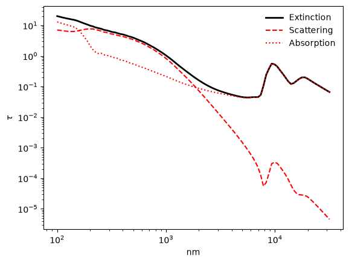
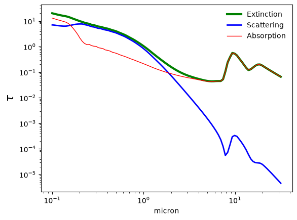
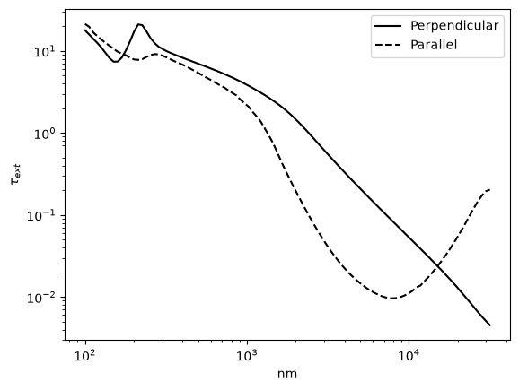
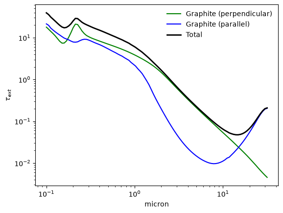
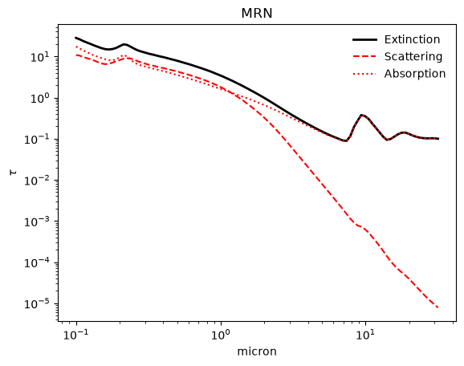
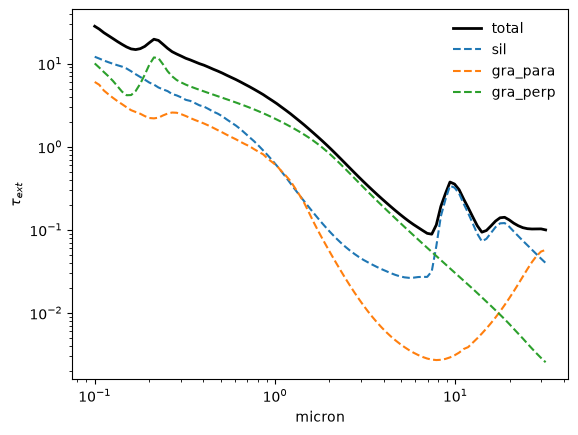
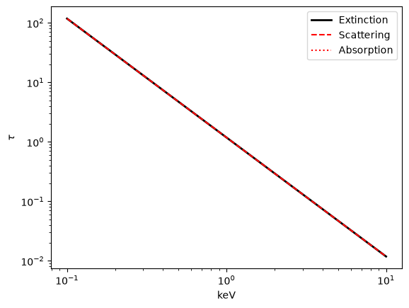

Extinction curves from custom grain populations¶
Initial parameters¶
Extinction calculations need a grid of photon energies or wavelengths, and (optionally) a dust mass column so that the output can be expressed as an optical depth rather than an efficiency. Here we set up an X-ray energy grid and an optical/UV wavelength grid, and compute a dust mass column from a gas column density and a dust-to-gas mass ratio.
import numpy as np
import matplotlib.pyplot as plt
import astropy.units as u
import astropy.constants as c
import xdust
xray_grid = np.logspace(-1, 1, 30) * u.keV
UV_IR_grid = np.logspace(-1, 1.5, 100) * u.micron
N_H = 1.e22 # hydrogen column density, cm^-2
dust_to_gas = 0.009 # dust-to-gas mass ratio
# Dust mass column, in g cm^-2
# The factor 1.4 accounts for the presence of helium
dust_mass_column = N_H * 1.4 * c.m_p.to('g').value * dust_to_gas
print("Dust mass column: {:.1e} g cm^-2".format(dust_mass_column))
Dust mass column: 2.1e-04 g cm^-2
Grain Populations¶
An xdust grain population ties together three ingredients: a grain size distribution, a grain composition (the optical constants of the material), and a scattering model (the physics used to compute how light interacts with the grains).
By the end of this tutorial, you will be able to:
construct a
SingleGrainPop, describing one grain composition and size distributioncompute and plot its extinction, scattering, and absorption efficiencies
combine several
SingleGrainPopobjects into aGrainPop, and work with it like a dictionaryuse the built-in helper functions
xdust.make_MRNandxdust.make_MRN_RGDrudefor common dust models
Constructing a SingleGrainPop¶
SingleGrainPop accepts short string names for the size distribution, composition, and scattering model, so you can build a grain population in one line.
Size distributions:
'Grain'– a single grain size'Powerlaw''ExpCutoff''Astrodust'– Astrodust size distribution from Hensley & Draine (2022)'WD01'– Weingartner & Draine (2001) size distributions
Any additional keyword arguments passed to SingleGrainPop are forwarded to the size distribution class.
Compositions:
'Drude'– the Drude approximation for the complex index of refraction'Silicate'– silicate properties from Draine (2003)'Graphite'– perpendicular graphite properties from Draine (2003)
Scattering models:
'RG'– the Rayleigh-Gans approximation (relevant for X-rays)'Mie'– the Mie scattering algorithm of Bohren & Huffman
# A power-law size distribution of silicate grains, using Mie scattering
silicate_pop = xdust.SingleGrainPop('Powerlaw', 'Silicate', 'Mie', md=dust_mass_column)
# Run the extinction calculation for the UV-optical wavelength grid
silicate_pop.calculate_ext(UV_IR_grid)
The built-in plot_ext method plots the extinction properties of the grain population, integrated over its grain size distribution. It takes two required arguments: a matplotlib axis, and a string specifying which property to plot:
'all'– scattering, absorption, and extinction'sca'– scattering only'abs'– absorption only'ext'– extinction only (extinction = absorption + scattering)
The unit keyword changes the units on the x-axis. Any other keyword arguments are passed to matplotlib.pyplot.legend when plotting 'all', or to matplotlib.pyplot.plot otherwise.
ax = plt.subplot(111)
silicate_pop.plot_ext(ax, 'all', unit='nm', frameon=False)
plt.loglog()
[]

Keyword arguments can be used to customize the appearance of each curve individually.
ax = plt.subplot(111)
silicate_pop.plot_ext(ax, 'ext', color='g', lw=3, label='Extinction')
silicate_pop.plot_ext(ax, 'sca', color='b', lw=2, label='Scattering')
silicate_pop.plot_ext(ax, 'abs', color='r', lw=1, label='Absorption')
plt.ylabel(r'$\tau$', size=16)
plt.loglog()
plt.legend(loc='upper right', frameon=False)
<matplotlib.legend.Legend at 0x7f7369329c10>

Customizing a SingleGrainPop¶
The string shortcuts above initialize the composition and scattering model with their default parameters. To change a setting – for example, a non-default value for a composition’s rho – construct the composition object yourself and pass it in directly.
In fact, SingleGrainPop accepts either a string shortcut or an actual size distribution (graindist), composition (graindist.composition), or scattering model (scatteringmodel), for each of its three arguments.
The example below creates separate populations for the perpendicular and parallel orientations of graphitic grains (see Draine 2003 for details), which requires constructing CmGraphite objects directly since there is no separate string shortcut for each orientation.
from xdust.graindist.composition import CmGraphite
graphite_perp = xdust.SingleGrainPop('Powerlaw', CmGraphite(orient='perp'), 'Mie')
graphite_para = xdust.SingleGrainPop('Powerlaw', CmGraphite(orient='para'), 'Mie')
graphite_perp.calculate_ext(UV_IR_grid)
graphite_para.calculate_ext(UV_IR_grid)
ax = plt.subplot(111)
graphite_perp.plot_ext(ax, 'ext', unit='nm', color='k', ls='-', label='Perpendicular')
graphite_para.plot_ext(ax, 'ext', unit='nm', color='k', ls='--', label='Parallel')
plt.legend()
plt.loglog()
[]

Combining multiple SingleGrainPop objects into a GrainPop¶
A GrainPop combines several SingleGrainPop objects and runs extinction calculations on all of them with a single method call. It behaves like a dictionary: each SingleGrainPop it contains is accessed by a key you choose when constructing it.
# Combine the two graphitic grain populations initialized above into a GrainPop dictionary
gra_dust_mix = xdust.GrainPop([graphite_perp, graphite_para], keys=['gra_perp', 'gra_para'])
# Calculate the extinction for every SingleGrainPop in the mixture, in one call
gra_dust_mix.calculate_ext(UV_IR_grid)
The GrainPop.info() method prints a short summary of the SingleGrainPop objects it contains.
gra_dust_mix.info()
General information for Custom_GrainPopDict dust grain population
---
Size distribution: Powerlaw
Extinction calculated with: Mie
Grain composition: Graphite
rho = 2.20 g cm^-3, M_d = 1.00e-04 g cm^-2
---
Size distribution: Powerlaw
Extinction calculated with: Mie
Grain composition: Graphite
rho = 2.20 g cm^-3, M_d = 1.00e-04 g cm^-2
The GrainPop extinction curves can be accessed individually or plotted in sum using the plot_ext method.
ax = plt.subplot(111)
# Each SingleGrainPop is accessed using the key assigned above
gra_dust_mix['gra_perp'].plot_ext(ax, 'ext', color='g', label='Graphite (perpendicular)')
gra_dust_mix['gra_para'].plot_ext(ax, 'ext', color='b', label='Graphite (parallel)')
# The GrainPop itself can be plotted the same way as a SingleGrainPop --
# this shows the sum of the silicate and graphite extinction
gra_dust_mix.plot_ext(ax, 'ext', color='k', lw=2, label='Total')
ax.legend(loc='upper right', frameon=False)
plt.loglog()
[]

Helper functions for common dust models¶
The xdust.grainpop module also provides ready-made GrainPop objects for two common dust models, so you don’t need to assemble them by hand.
make_MRN¶
make_MRN returns a mixture of silicate and graphite grains following a power-law size distribution with a maximum grain size of 0.3 micron (Mathis, Rumpl & Nordsieck 1977). Following Draine’s recommendation, the graphitic grain population is split 1/3 parallel and 2/3 perpendicular; by default, 60% of the dust mass is silicate, following the recommendation in Corrales et al. (2016). Use the fsil keyword to change the silicate mass fraction.
mrn = xdust.make_MRN(md=dust_mass_column)
mrn.calculate_ext(UV_IR_grid)
ax = plt.subplot(111)
mrn.plot_ext(ax, 'all', frameon=False)
plt.loglog()
[]

The individual components can be plotted alongside the total by looping over GrainPop.keys, the same way you would iterate over the keys of a dictionary.
ax = plt.subplot(111)
mrn.plot_ext(ax, 'ext', color='k', lw=2, label='total')
print("GrainPop keys:", mrn.keys)
for key in mrn.keys:
mrn[key].plot_ext(ax, 'ext', ls='--', label=key)
ax.legend(loc='upper right', frameon=False)
plt.loglog()
GrainPop keys: ['sil', 'gra_para', 'gra_perp']
[]

mrn.info()
General information for MRN dust grain population
---
Size distribution: Powerlaw
Extinction calculated with: Mie
Grain composition: Silicate
rho = 3.80 g cm^-3, M_d = 1.26e-04 g cm^-2
---
Size distribution: Powerlaw
Extinction calculated with: Mie
Grain composition: Graphite
rho = 2.20 g cm^-3, M_d = 2.81e-05 g cm^-2
---
Size distribution: Powerlaw
Extinction calculated with: Mie
Grain composition: Graphite
rho = 2.20 g cm^-3, M_d = 5.62e-05 g cm^-2
make_MRN_RGDrude¶
The Drude approximation treats the complex index of refraction as if the solid were a mass of free electrons, making it relatively insensitive to the specific compound. make_MRN_RGDrude returns a SingleGrainPop using the CmDrude composition together with the Rayleigh-Gans scattering approximation, which is most relevant at X-ray wavelengths.
mrn_xray = xdust.make_MRN_RGDrude(md=dust_mass_column)
mrn_xray.calculate_ext(xray_grid)
ax = plt.subplot(111)
mrn_xray.plot_ext(ax, 'all')
plt.loglog()
[]

The plot above shows that the Rayleigh-Gans-plus-Drude approximation produces an extinction model that decays smoothly as \(E^{-2}\). There is no absorption component in the RG-Drude model.
mrn_xray.info()
Size distribution: Powerlaw
Extinction calculated with: RGscat
Grain composition: Drude
rho = 3.00 g cm^-3, M_d = 2.11e-04 g cm^-2